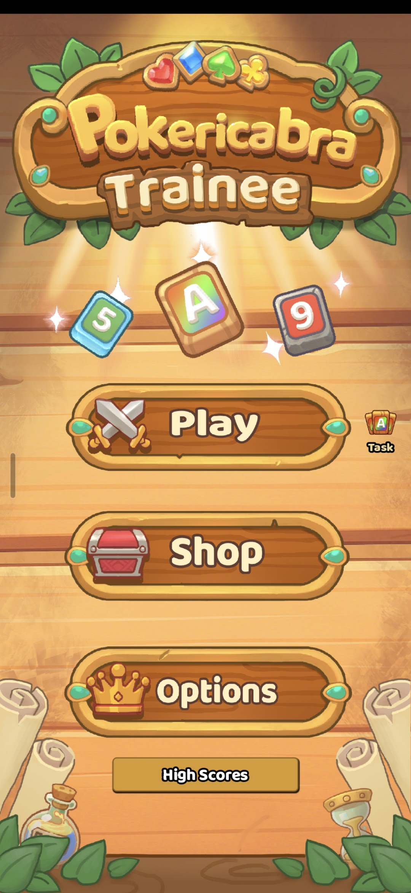

Skip to project
Jason Zhong
Product. Design. Development.
+852 6948 5304
jasonzhong2008@yahoo.ca
EN
繁體中文
Market Lens
Released Mobile App
Current Project
Résumé & AI
Please enable JavaScript to explore the projects. 請啟用 JavaScript 以探索作品。
Contact Jason
